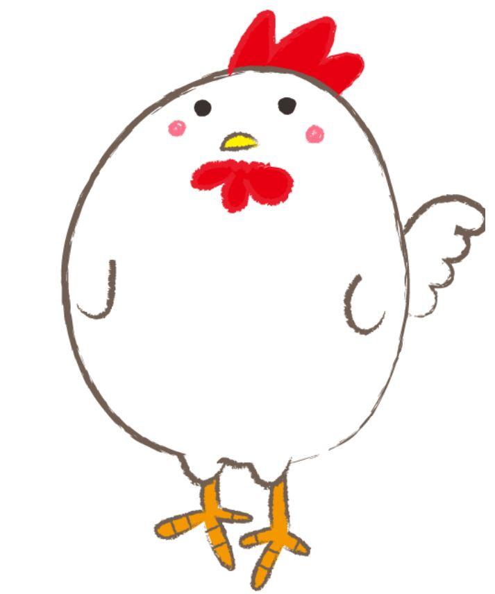

닭발이란?
닭의 발에서 발톱이 있는 발끝을 절단하고 남은 부위로 만든 요리를 뜻한다.
닭은 달걀에서부터 고기와 내장까지 버리는 부분 없이 활용이 가능하다.
그중 닭발은 닭의 발목 아래에 해당하는 부위로 뼈가 얇은 연골의 형태이기 때문에 쉽게 씹히고,
껍질은 콜라겐과 같은 결합조직 단백질이 붙어있어 쫀득쫀득한 식감이 난다.
닭발은 양념에 재워 갖은 채소와 함께 볶아 먹는 경우가 많으며,
매콤하고 자극적인 맛에 술안주로 자주 곁들여진다.
오래 두면 누린내가 날 수 있어 구입 후 바로 조리하는 것이 좋고,
선홍색을 띠며 눌렀을 때 탄력이 있는 것을 고르도록 한다.
닭발에는 콜라겐이 풍부하여 피부 미용에 도움이 되며,
콘트로이친(chondroitin)이라는 성분이 함유되어 있어 관절염을 완화하고 골다공증을 예방하는 효과를 볼 수 있다.